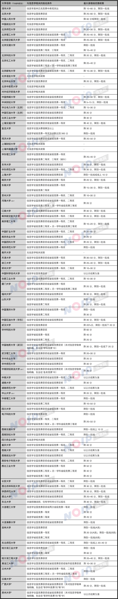

2018 大学自主招生申请信息学竞赛成绩要求汇总¶
2018 年高考已经临近，与最终高校招生录取密切相关的自主招生报名也已经陆续开始，各大高校近日公布了各自的《自主招生简章》。
在学科竞赛加分取消，自主招生补位的大背景下，对于学习信息学竞赛的同学们来说，“到底什么样的信息学竞赛奖项可以在自主招生中得到认可？”成为了大家普遍关注的问题。
在这里，我们对今年有自主招生资格的高校在自主招生简章中明确出的相关条件和优惠情况进行了汇总：

备注：浙江、上海、江苏考评方式有特殊要求，相关分数政策请以自主招生简章中特别说明部分为准。
相比于其他学科竞赛，今年很多学校的自主招生政策对于信息学竞赛的选手来说有颇多格外关照：
中国科学技术大学、北京邮电大学、四川大学等高校在自主招生简章中为“网络安全”相关方向单独辟出了招生计划，明确定向招收有信息学竞赛背景的学生。
复旦大学在自主招生简章中特别明确了 NOIP 提高组成绩需要达到 360 分的要求。
天津大学自主招生简章明确了通过信息学竞赛成绩获得自主招生资格的学生入校后需按天津大学 ACM 国际大学生程序设计竞赛（ACM-ICPC）集训队的要求训练和比赛。